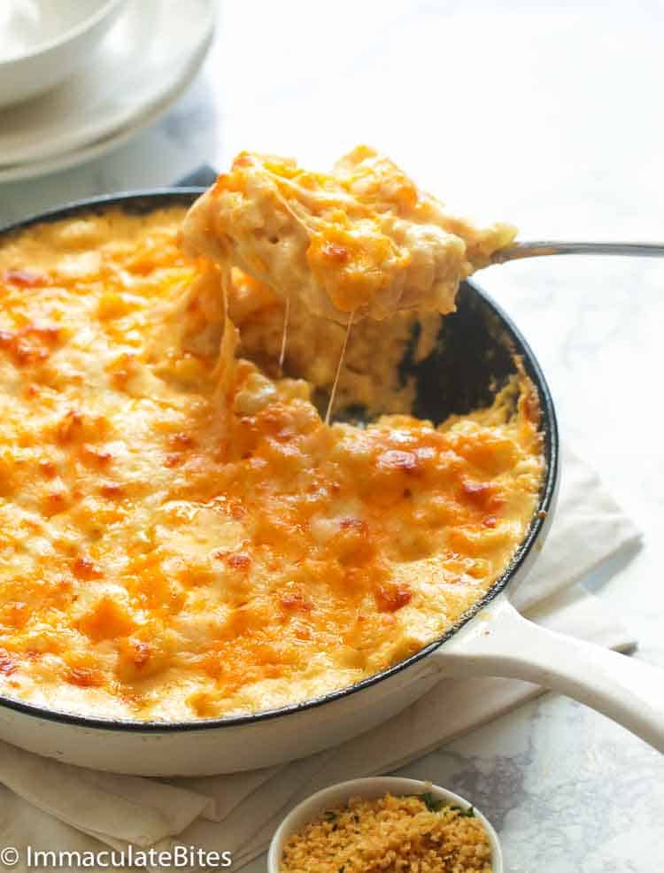

Home
Baked Mac and Cheese

Description
This is a southern style recipe for baked mac and cheese. It'll be flavorful and cheesy with a nice golden crust on top. The recipe consits of numerous types of cheese, seasonings, and much more!
Ingredients
- Macaroni
- Flour
- Evaporated milk
- Half-and-half milk
- Onion powder
- Garlic powder
- Creole seasoning
- Cayenne pepper
- Mozzarella cheese
- Sharp cheddar
- Gouda cheese
- Butter
Steps
- Macaroni - Boil macaroni according to the instructions on the box.
- The Roux - Add butter to the skillet. As soon as the butter melts, whisk in flour. Continue whisking until flour is thoroughly mixed with butter. Then cook for about a minute to get rid of the flour taste.
- The Sauce - While stirring the roux, slowly add evaporated milk, a little at a time, followed by the half-and-half. You don’t want the mixture forming lumps. Simmer for 3-5 minutes until it thickens slightly.
- Season - Add onion and garlic powder, Creole seasoning, and cayenne pepper. Bring to a simmer and let it simmer gently for about 2 minutes. Stir in the grated cheeses (reserving some as a topping later), and continue stirring until everything melts into creamy goodness—season with salt and pepper to taste.
- Assemble - Add the strained pasta to the pot of cheese sauce, and stir to incorporate evenly. Then transfer the pasta mixture into a cast-iron skillet or a lightly greased 2-quart baking dish. Then top with remaining cheese.
- Bake it for 25 minutes in a preheated 375F°/190℃ oven.